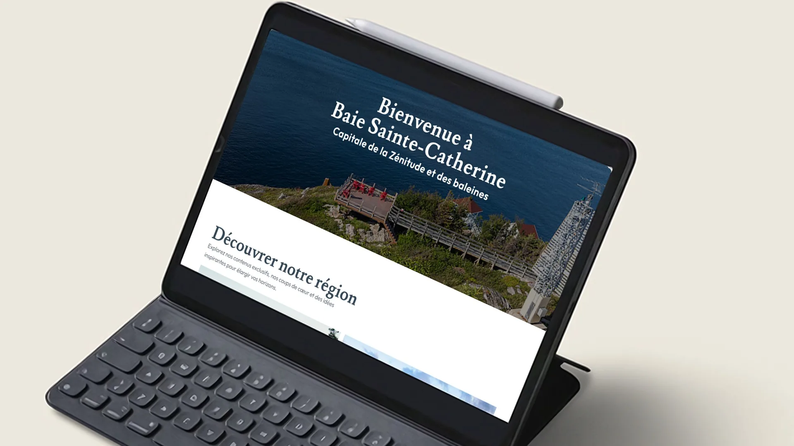
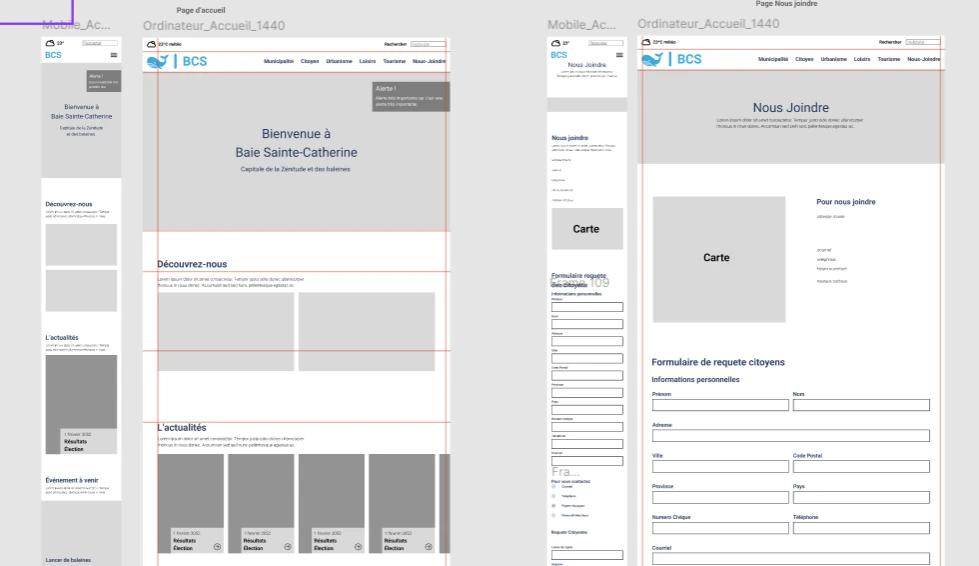
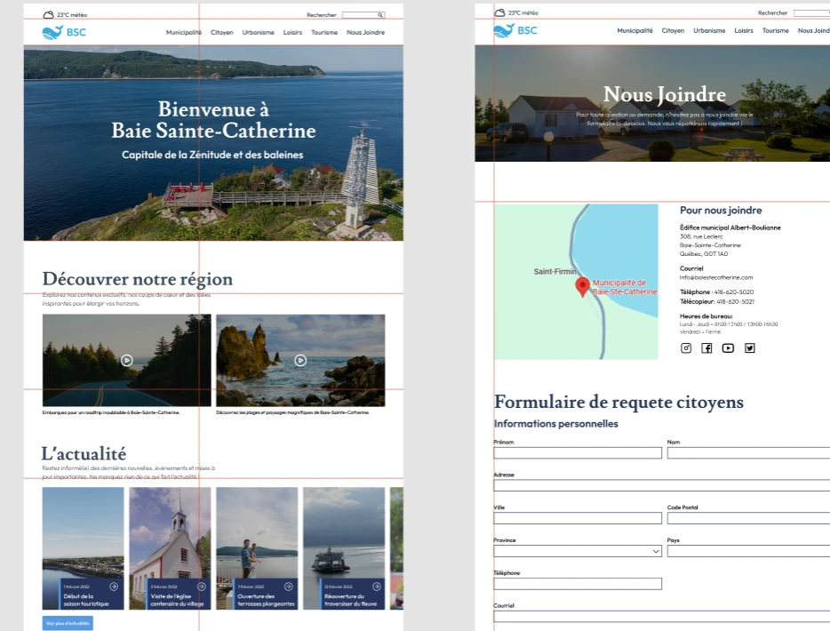
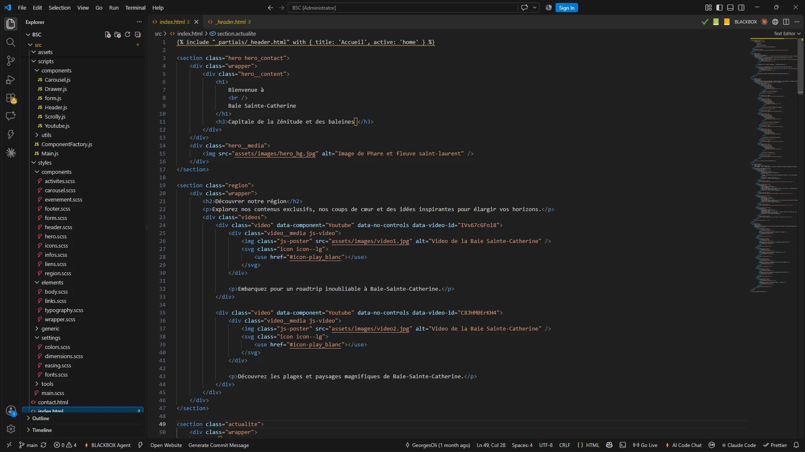
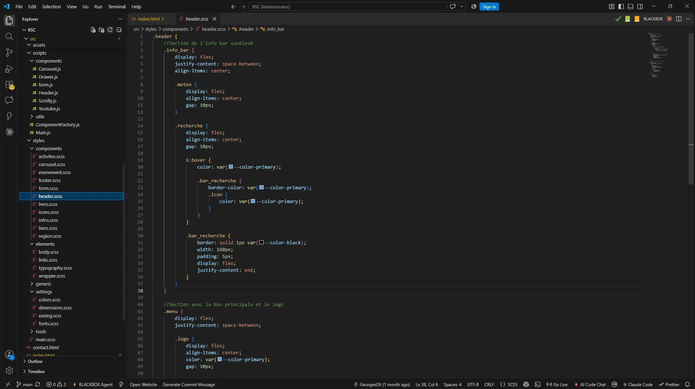
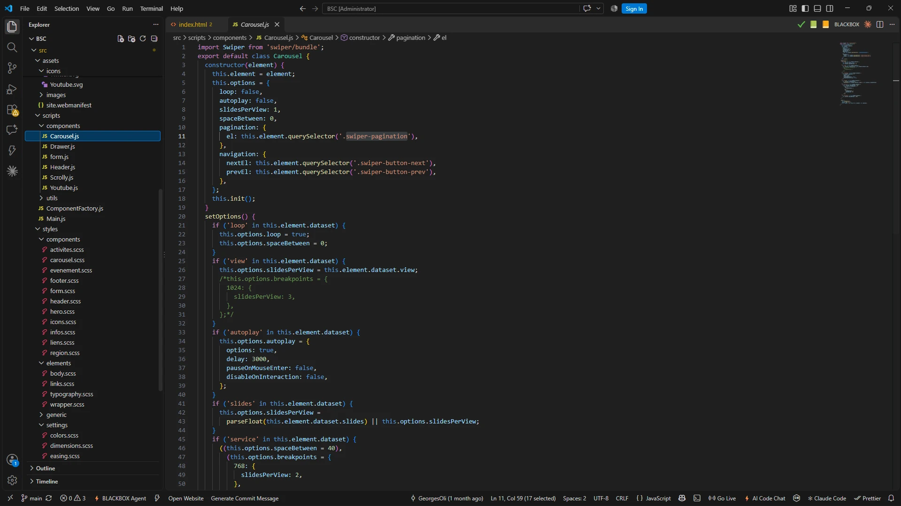
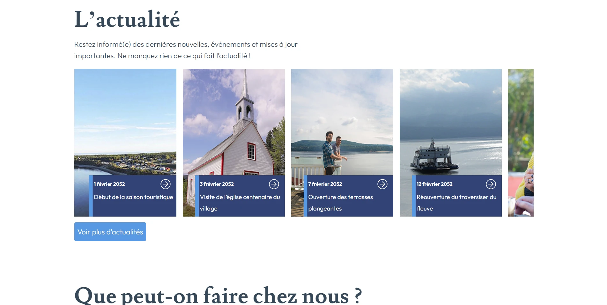
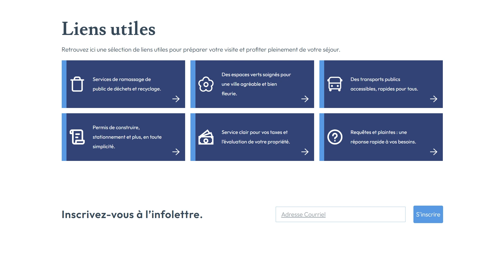
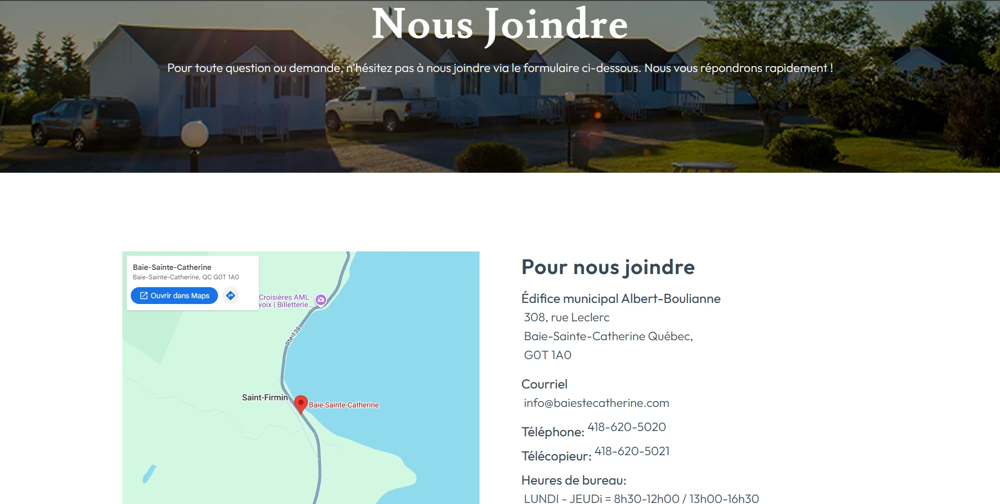
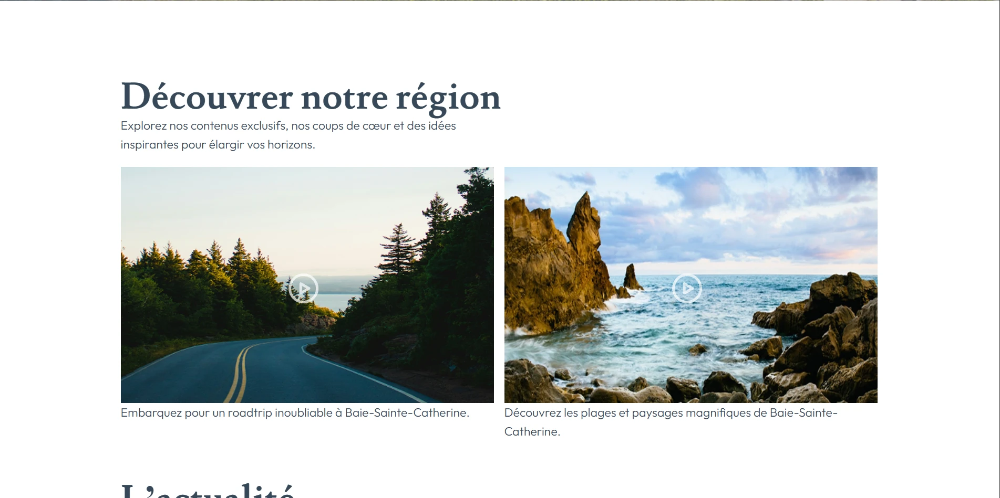

01
Recherche et analyse
Premièrement, j’ai analysé le site actuel de la municipalité pour repérer ce qui ne fonctionnait pas : la navigation , la lisibilité et l’ organisation de l’information.
Olivier Georges
000%
Baie-Sainte-Catherine est un projet de design UI/UX et d’intégration Web dans lequel j’ai repensé le site de la municipalité pour lui donner un style plus moderne , plus clair et plus agréable à consulter.
Designer et intégrateur - Seul - Projet scolaire - 2026
Tester le projet

Le projet Baie-Sainte-Catherine a été réalisé dans le cadre du cours Design d’expérience . Nous devions faire la refonte complète du site d’une municipalité : concevoir la maquette dans Figma , puis l’intégrer en HTML, CSS et JavaScript en respectant un design.
Designer UI/UX et intégrateur Web . J’ai conçu la maquette du site dans Figma et j’ai intégré les pages en HTML, CSS et JavaScript , incluant la page contact.
Dans ce projet, l’IA a été utilisée de façon très minime . Elle a servi à créer et à corriger des textes et des titres pour le site Web.

Premièrement, j’ai analysé le site actuel de la municipalité pour repérer ce qui ne fonctionnait pas : la navigation , la lisibilité et l’ organisation de l’information.

Deuxièmement, j’ai conçu la maquette du nouveau site dans Figma : couleurs , typographies , grille et composantes réutilisables.

Troisièmement, j’ai intégré la maquette en HTML , puis ajouté les médias, icônes, liens et typographies .

Quatrièmement, l’intégration du CSS et de la direction artistique du projet.

Dernièrement, l’ajout du JavaScript pour rendre le site interactif : le menu, les animations et les carrousels.




Garder les couleurs et les images de la région, mais avec une mise en page plus épurée .
Utiliser de grandes images du fjord et des textes courts pour présenter chaque attrait sans surcharger les pages.
Regrouper le contenu en sections et en cartes pour faciliter la navigation .
En conclusion, le projet Baie-Sainte-Catherine m’a permis de réaliser un projet complet, de la conception dans Figma jusqu’à l’intégration en HTML, CSS et JavaScript . Il m’a appris à penser à l’ expérience utilisateur avant même de coder.
Retourner aux projets
Projet Baie-Sainte-Catherine
J’ai utilisé l’IA générative de façon très minime pour créer et corriger des textes et des titres du site Web. Aucun segment de code fourni par l’IA n’a été utilisé dans le projet.
Ma contribution comprend le design de la maquette Figma et toute l’intégration.
Pour préparer cette fiche, j’ai utilisé Claude (Anthropic) afin de :
Rédiger et corriger les textes de présentation à partir de mes notes.
Reformuler le deuxième défi du projet.
Créer la mise en scène du site sur une tablette à partir de mes propres captures.
Écrire les textes alternatifs (alt) des images pour l’accessibilité.
Ajuster l’affichage de la page sur mobile.
J’ai vérifié et ajusté tout ce qu’elle a produit.
Design UI/UX et intégration : Olivier Georges
Contenu et identité d’origine : Municipalité de Baie-Sainte-Catherine
Projet scolaire réalisé en 2026 dans le cadre du cours Design d’expérience, sans but commercial.